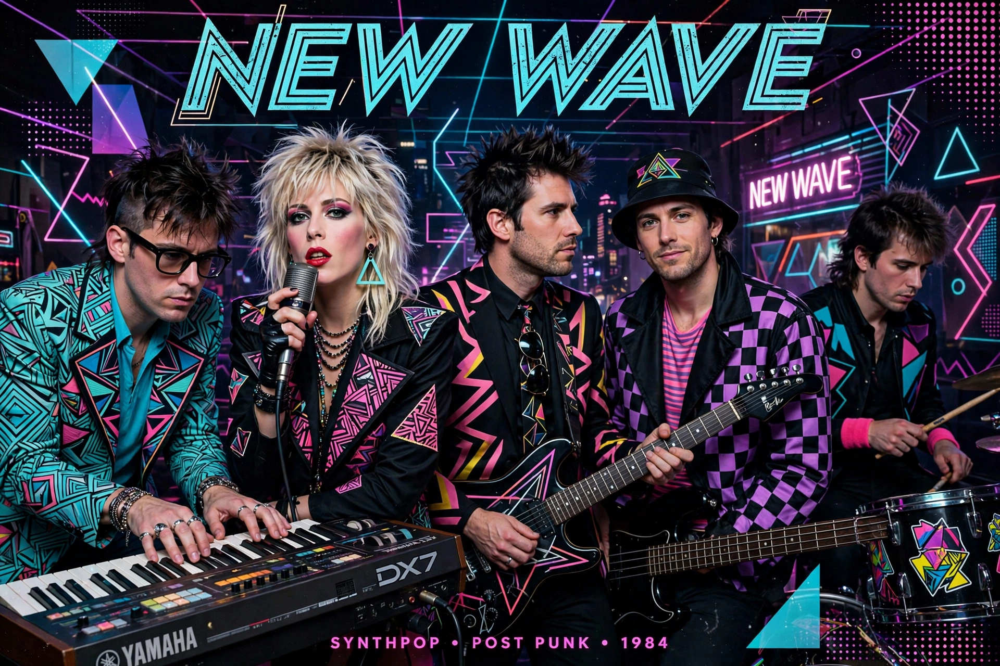

New wave is a music genre that encompasses numerous pop-oriented styles that emerged in the late 1970s. It initially emerged as a more melodic, varied offshoot of punk rock, then incorporated electronic, dance, reggae, ska and art-rock influences.
The term was used for acts such as Talking Heads, Blondie, Elvis Costello, The Police, The Cars and Devo. In Britain it covered post-punk-adjacent pop, the ska revival (The Specials, Madness), and later synth-pop (Depeche Mode, Duran Duran, Eurythmics, A Flock of Seagulls) and the New Romantic scene. MTV, launched 1981, made British new wave hugely successful in the US in the "Second British Invasion".
Angular guitars, prominent synthesizers, danceable rhythms, quirky or ironic lyrics, and striking visual style and music videos.
New wave shaped alternative rock, indie and modern pop, with revivals in the 2000s post-punk revival and synthwave.